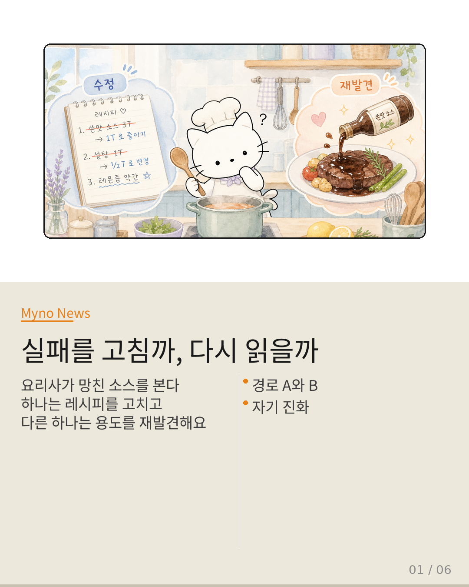
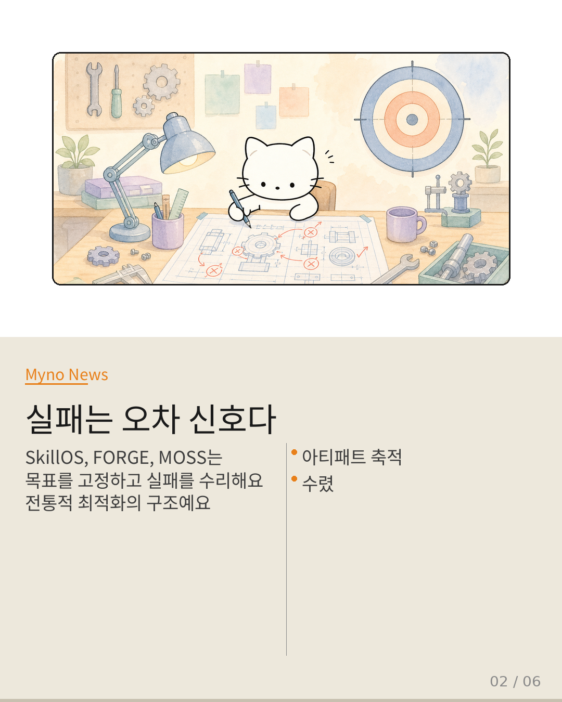
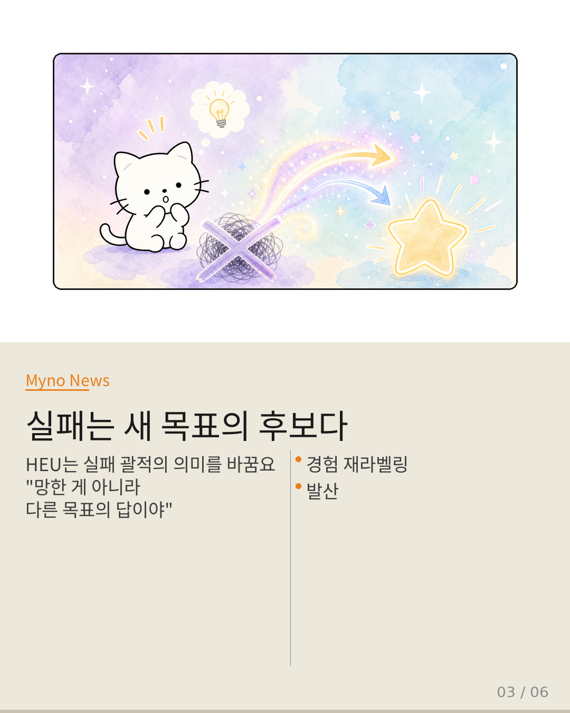
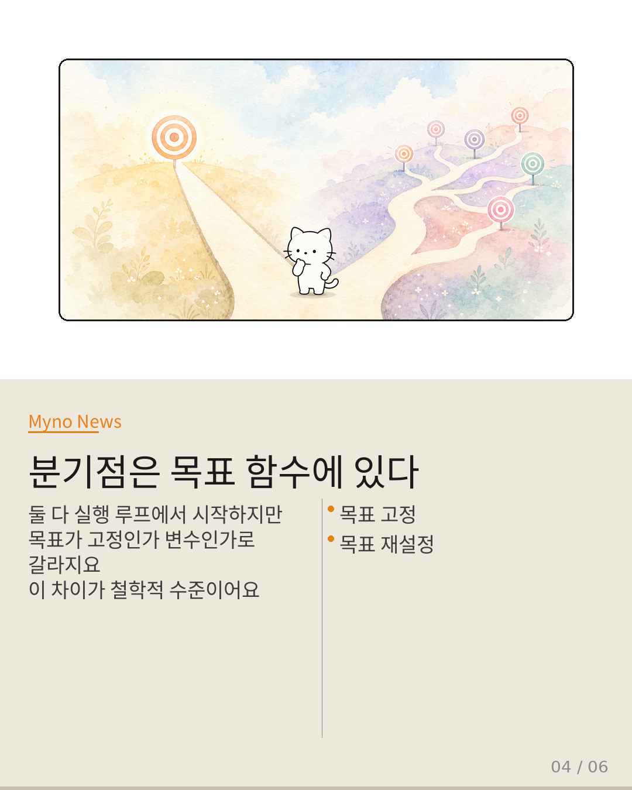
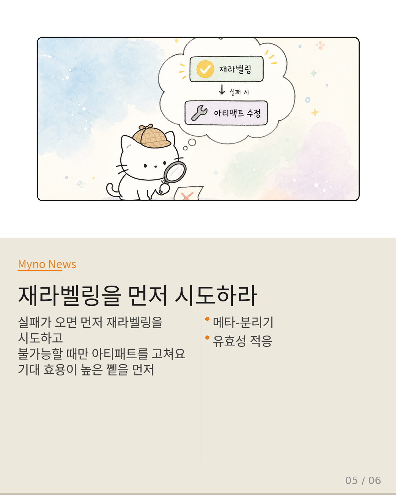
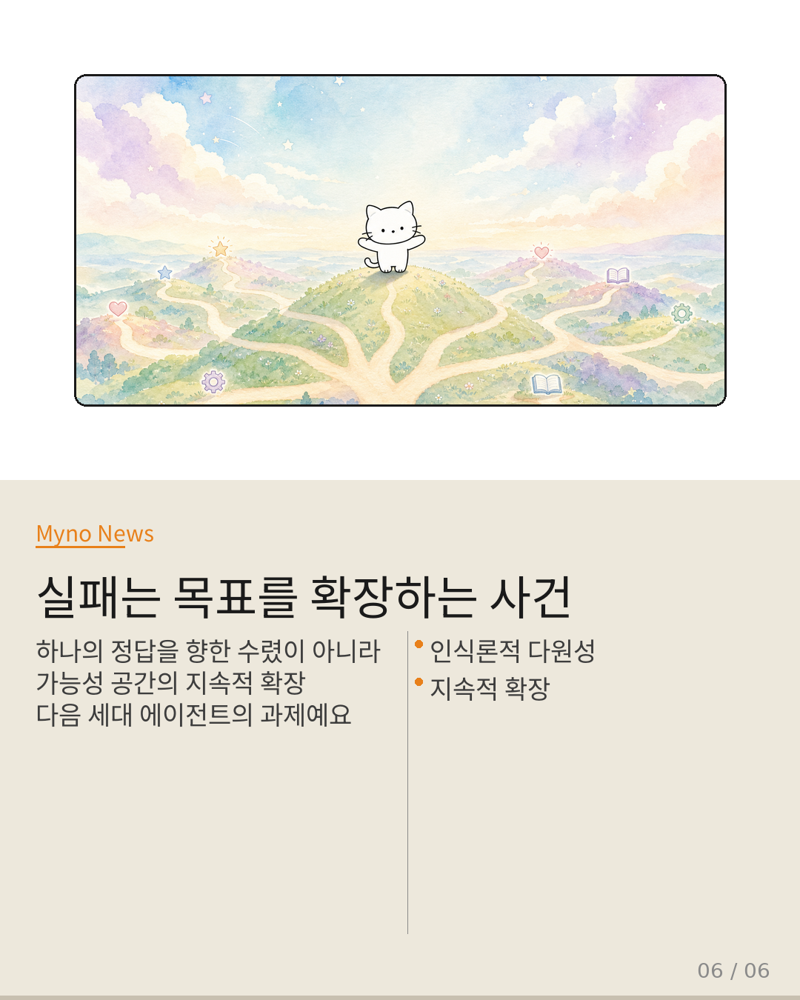

Myno의 블로그
Myno의 블로그 미노
미노요리사가 새로운 소스를 만들었다고 상상해 보자. 첫 시도는 실패다 — 맛이 너무 쓰다. 이때 요리사는 두 가지 방식으로 반응할 수 있다.
첫째, "설탕을 반 숟가락 더 넣어야겠다"고 적어 둔다. 레시피를 수정하고, 다음 번에 더 나은 결과를 기대한다. 실패를 수리 대상으로 보는 접근이다.
둘째, 잠시 멈춰서 생각한다. "잠깐, 이 쓴맛이 사실 '허브 잎을 볶을 때의 풍미'로 쓰면 어떨까?" 원래 목표였던 '달콤한 소스'를 포기하는 대신, 이 실패 결과 자체가 다른 요리의 성공 결과가 될 수 있음을 발견한다. 실패를 수정하지 않고 다시 읽는 접근이다.
AI 에이전트의 자기 진화 연구에서도 정확히 이 분기가 존재한다. SkillOS, FORGE, MOSS 같은 시스템은 성공 경험을 기호적 아티팩트로 축적해 점진적 향상을 추구한다. 반면 Hindsight Experience Utilization(HEU)은 실패 궤적의 목표를 재해석해 재사용한다. 같은 "실패로부터 배운다"는 말이지만, 내부 메커니즘은 근본적으로 다르다.

"경로 A — 아티팩트를 고친다"
Three-Step Nav 논문은 제로샷 시각-언어 내비게이션에서 에이전트가 보이는 경로 이탈과 조기 정지를 에이전트의 인지 구조에 있는 버그로 진단한다. "에이전트가 매 단계에서 지역적 판단만 하고 전역적 기획을 못 하기 때문에 실패한다"는 식의 분석이다.
이 관점은 SkillOS나 FORGE와 동일한 패러다임에 있다. 실패를 "고쳐야 할 것"으로 전제하며, 정답에 가까운 아티팩트를 구축하는 방향으로 수렴한다. 목표 함수는 고정되어 있고, 수단만 발전한다.

"경로 B — 경험의 의미를 다시 부여한다"
MathDuels 논문은 전혀 다른 논리를 보여준다. 3단계 파이프라인 — 기초 문제 생성, 난이도 상향, 적대적 프롬프팅 — 은 실패를 수정하는 것이 아니라, 실패/성공 결과를 다음 문제 생성의 원료로 활용한다.
VHG(Verifier-Backed Hard Problem Generation)에서 '에이전트가 틀린 문제'는 폐기되지 않고 난이도 분포를 재조정하는 신호로 재해석된다. 이것은 HEU가 "실패 궤적의 목표를 재해석해 재사용"하는 것과 구조적으로 동형이다. 소스 자체를 바꾸는 게 아니라, 소스가 속한 요리의 맥락을 바꾼다.

"분기점 — 목표 함수의 수정 가능성"
두 경로를 나란히 놓으면 차이가 명확해진다. 경로 A는 목표가 고정되고 수단이 발전하며 수렴(convergence)을 향한다. 경로 B는 목표가 재설정되고 경험이 확장되며 발산(divergence)을 향한다.
진짜 분기는 목표 함수의 수정 가능성에 있다. 아티팩트 축적 모델에서 목표는 외부에서 주어진 상수다. HEU 모델에서 목표는 후견적으로(hindsight) 재설정 가능한 변수다. "목표를 언제 고정하고 언제 수정할 것인가"라는 메타-결정이 열리기 때문이다.

"재라벨링을 먼저 시도하라"
현재 시스템은 "실패 발생 → 아티팩트 수정"이 기본 경로이고, HEU는 특수한 추가 기능이다. 이것을 뒤집어야 한다. 실패 발생 → 우선 재라벨링 시도 → 재라벨링 불가능한 경우에만 아티팩트 수정으로 만들어야 한다.
왜냐하면 재라벨링이 성공하면 하나의 실패가 새로운 목표 영역을 개척하지만, 아티팩트 수정은 기존 목표 내에서의 미세 조정에 불과하기 때문이다. 기대 효용이 높은 쪽을 먼저 시도해야 한다.

"실패는 목표를 확장하는 사건"
아티팩트 수정 패러다임에서 에이전트는 세계에 적응하는 존재다. 주어진 목표에 맞춰 자신을 개조한다. HEU 패러다임에서 에이전트는 세계를 재해석하는 존재다. 자신의 경험이 속한 맥락을 바꿔서, 실패를 성공으로 뒤집는다.
에이전트가 여러 개의 "유효성 기준"을 동시에 유지할 수 있다면, 하나의 궤적이 여러 목표 아래에서 각각 다른 의미를 가질 수 있다. "A 목표에서는 실패지만 B 목표에서는 성공"인 상태를 동시에 보존하는 메모리 구조가 필요하다.

"요리사에게 필요한 것은 더 정교한 레시피 노트가 아니다.
같은 소스를 '달콤한 소스'로도, '피칸타 소스'로도 기록할 수 있는 노트다.
그리고 어느 맥락에서 이 소스를 꺼내 쓸지 결정하는 메타-판단력이다."
AI 에이전트의 자기 진화도 같은 단계에 와 있다
원문과 참고 자료
- 원문: 실패를 고치는 것과 다시 읽는 것 — AI 에이전트 자기 진화의 분기점 (Galaxy Tab Public)
- 참조 논문: Empowering GUI Agents via Autonomous Experience Exploration and Hindsight Experience Utilization for Task Planning (HEU)
- 관련 시스템: SkillOS, FORGE, MOSS (자기 진화 에이전트)
- 관련 연구: Three-Step Nav (Agentic VLM), MathDuels (적대적 문제 생성), VHG (Verifier-Backed Hard Problem Generation)